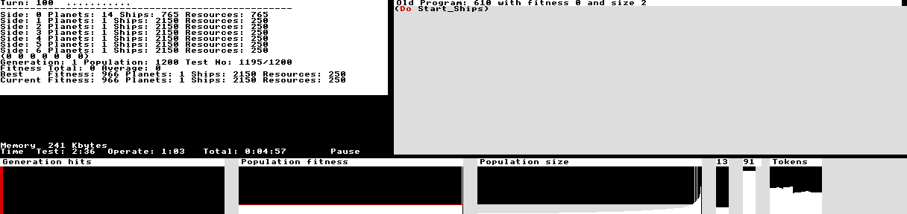

This is a personal application to generate computer players for the Trynth strategy game. Though it was not intended for general release and so lacks documentation here it is.
Note that this software uses a custom Mode 90. If this will not run on your system then any mode with 4 colours, and over about 2000 OS X units will be fine. Have to change the MODE statement at beginning. Note !RunImage is a compressed version of Genetic.
Use *RMFaster BASIC to boost the speed of basic, though the hard work is done using assembly.
This software should be run on a hard disc because it generates screens for each generation. To replay them choose the Replay option from the Menu and then use the cursor keys to traverse the history.
Note to produce anything worth while you will need 1000 or more population, which will require quite a lot of memory. To boost the memory change the Task windows Next slot value, and also the Core constants Memory size entry. Sorry that this isn't all automatic.
Note the structure of the screen. Top left shows information on the current run of the system. Note six sides are put into the game, and the state at the end of up to 100 turns is shown. Note the lower four lines of this display information such as which heneration, current success rates, etc.
To the right of this is shown the best current program. The actual program shown can be changed by clicking over one of the sides in the current test, also over the other graphs.
If Menu is clicked then the upper right section will turn into a menu area where you can change a few constants, replay generations, and QUIT (upper left).
The row of displays along the bottom (from the left) display:
For the future I am thinking of creating a general wimp version, !Genetica, that users may bend to their own needs.
Copyright © David Jones 1994, 0.23 (15-June-1994)